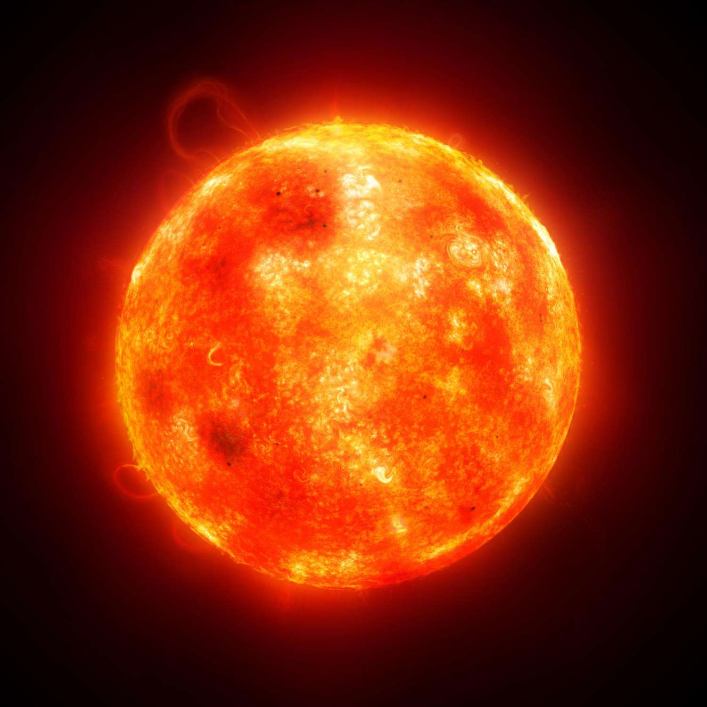
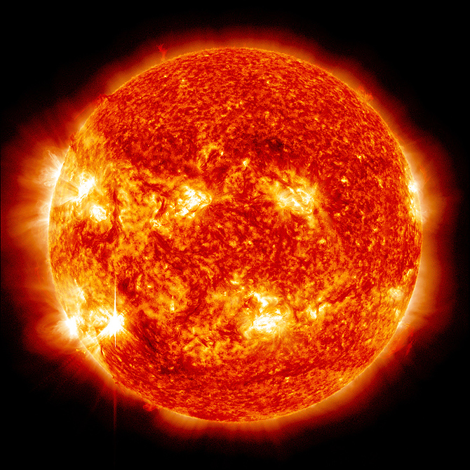

The Sun
The star of the show!
Our Star Up Close


Five Facts About the Sun
- The Sun is a star made mostly of hydrogen and helium.
- Its diameter is approximately 1.4 million kilometers.
- The Sun contains about 99.8% of the solar system's mass.
- Sunlight takes about eight minutes to reach Earth.
- Nuclear fusion in the Sun's core converts hydrogen into helium and releases energy.
Inside Our Star
Select an interior layer to discover how energy travels through the Sun.
Core
Nuclear fusion joins hydrogen nuclei to form helium, releasing the energy that powers the Sun.